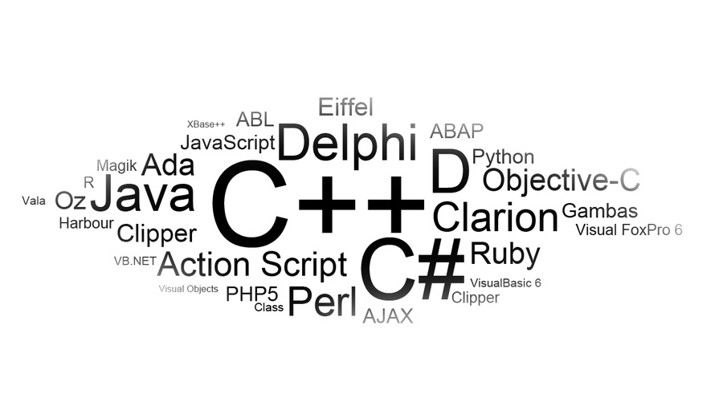

¿Quién soy?

Sobre Mi. Como habrán observado, me llamo Jorge López. Soy un experto en ciberseguriad. Mi carrera en la ciberseguriad comenzó hace más de 5 años cuando me entere de todo el mundillo de la ciberseguridad en una charla, desde ese entonces empecé a aprender e investigar por mi cuenta; hasta que entre en una carrera donde expandiría aún más mis conocimientos. Para terminar trabajando en varias empresas líderes del sector. También se programación (C, C++, Java), ya que hice un grado superior de desarrollo de aplicaciones multiplataforma. Antes de empezar con la ciberseguridad estuve en una pequeña empresa de desarrollo de videojuegos donde hicimos el famosísimo juego Jump To Wisdom. Además tengo conocimientos básicos en diseño web (HTML y CSS), con los cuales puedo hacer paginas web sencillas donde mostrar los productos al público A día de hoy se me podría considerar un programador 'todoterreno' con formación y experiencia en las principales áreas de la programación, el diseño web y en especial de la ciberseguridad.


- 